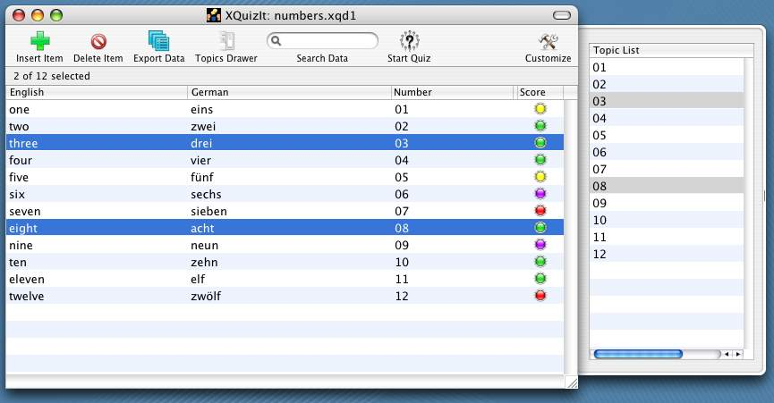

| VocableTrainerX has a drawer that shows all the categories present in the document. To open the drawer, select "Drawer" in the "Window" menu or press the button in the Toolbar. |
You can use the entries in the Topics table to filter the selection of vocabulary items in the main table view.
|  | Simply select one or several entries in the Topics list and
the table selection will be filtered according to the ones you have chosen. This filtering
works in tandem with the filtering action of the search field in the toolbar. While search-field filtering is in progress, several program features are disabled, including adding entries to and deleting entries from the main vocabulary table; cutting and pasting are also prohibited. Importing CSV data from a text file is also not allowed during filtering. However items can be copied from a filtered list and then pasted into another document or exported as CSV, as long as the target document is not also being filtered. You are also permitted to conduct a quiz on a filtered list, to save the filtered data to the same or a different disk file, using the "Save As..." command. |
Clicking the header cell of the topics list to sort the list also deselects any selected items and cancels filtering by topic.